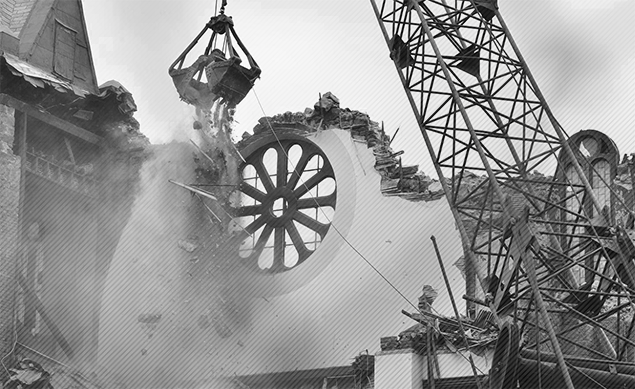

Exerciții de supraviețuire
O muzică șocant de rudimentară, simplă și nedisimulată

Partituri și înregistrări
Înregistrare
Rezumat
Exerciții de supraviețuire, pentru fagot și mediu electronic, s-a născut dintr-o criză personală și s-a transformat treptat într-un strigăt mai larg împotriva unei lumi secătuite spiritual. Configurată ca o suită de cinci meditații pentru fagot solo, piesa opune „disonanțelor cultivate” de astăzi un limbaj muzical voit rudimentar, simplu și nedisimulat.
Fișă tehnică
| Orchestrație | Fagot, mediu electronic |
|---|---|
| Text | — |
| Durată | 8′ |
| Stare | Finalizată |
| Finalizat | 2016 |
| Premieră | — |
| Interpretat de | — |
| Distincții | Mențiune la Concursul de compoziție Ștefan Niculescu organizat de UNMB în 2016 |
| Copyright | Claudius Iacob |
Note de program
Prima versiune a Exercițiilor pentru supraviețuire (Survival Exercises, 2013) — niciodată publicată, nici prezentată publicului — s-a născut în mari frustrări, într-o perioadă în care deșertăciunea cruntă a unei existențe aparent prospere, dar în fapt fără finalitate mi-au adus sinele creator la limita extincției. Într-un efort de a scăpa de atacul unificat al grilelor Gantt, foilor de calcul, rapoartelor, estimărilor și altor diverse nimicuri, am încropit aceste Exerciții, pentru a-mi demonstra că sunt mai mut decât o rotiță micuță care se învârte la nesfârșit într-o mașinărie infernală; o încercare conștientă de a-mi aduce aminte de mine însumi ca de un creator. În plin proces, am avut parte de o revelație, ce a sfârșit prin a-mi ridica de pe ochi vălul prin care priveam în jur: am văzut limpede omenirea întreagă, rătăcind epuizată într-o existență secătuită de spirit, dragoste, speranță și credință. Aceasta a transformat Exercițiile mele dintr-o operațiune de salvare a mea, personală, într-un urlet nedefinit împotriva unei lumi ce, chiar dacă avansează tehnologic, decade spiritual.
În forma lor curentă, Exercițiile pentru supraviețuire păstrează, în principiu, conținutul Caietului al Doilea (Book Two) din versiunea anterioară, mult mai lungă, și spicuiesc ocazional din Caietul Întâi (Book One) în nou-adăugatul mediu electronic. Piesa pătrunde ireverențios într-un teritoriu dominat astăzi de disonanțe stranii, propunând o muzică șocant de rudimentară, simplă și nedisimulată, din a cărei plăceri unii se vor sfii să se înfrupte. Și totuși, aceste modeste studii pentru fagot solo (căci asta sunt) își propun să-l facă pe ascultătorul de muzică clasică de astăzi să redescopere bucuria de a percepe o armonie agreabilă, un discurs elocvent, o temă muzicală onestă (una pe care să o poți fredona în timp ce te întorci de la concert).
Subtitlul piesei, Meditații pentru fagot solo, scoate la iveală intenția autorului de a spicui și pune în muzică câteva teme de meditație profund umane:
I. Despre gândirea la moarte, și a sa folosință (On Death, and its lucrative remembering)
Un demers ascendent, ca o căutare a unui fundament sonor pe care să se poată clădi. De asemenea, o subtilă trimitere la învățăturile „părinților cu viață îmbunătățită” din pustietățile Orientului, care socoteau permanenta „amintire a morții” ca piatra de temelie a „îndreptării”.
II. Despre necruțătorul vals al vieții (On Life, and its ruthless waltz)
Un rudiment de vals, întunecat, construit pe temelia căutărilor din secțiunea precedentă. Oarecum reușește să redea natura paradoxală a vieții omenești, ce nu face decât să perpetueze o neabătută stare de mortalitate.
III. Despre noi doi, și monologul nostru drag (On Marriage, and the way she leaves me silent)
Similar unui interludiu; o plonjare sarcastică în miezul lumesc al existenței noastre cea de toate zilele.
IV. Despre tinerețe, dragoste, o bancă la umbră, și un moș cu flașneta (On Love, Youth, Shady Benches, and that old barrel organ man)
Un amor de roman ieftin, o romanță adorabil de demodată, susținută frenetic de „muzica concretă” de dedesubt. Își trimite ascultătorul în timpul sau în locul feeric al „tinereței-fără-bătrânețe”, un loc unde se mai poate încă îndrăgosti ca un licean de viață și de toți ceilalți.
V. Despre minunatele, cele prea-de-demult vecernii. Epilog (Epilogue, on the much too distant sunset vespers)
O pomenire tristă și îngândurată a „sufletului nepieritor”, a zilelor când materia inertă încă nu-l înghițise. O rememorare a timpurilor când oamenii încă credeau în Dumnezeu. Nu întâmplător, mediul electronic însoțitor aduce ecouri dintr-o veche cântare creștină, reiterând opinia autorului că singurul leac la vidul care ne consumă astăzi din interior este să ne regăsim rădăcinile spirituale.
Mediul electronic pe care îl oferă această nouă versiune alternează pasajele de muzică electronică pură cu cele de muzică concretă, amalgamând uneori și așa-numite instrumente virtuale. Toate sunt în strânsă relație cu meditația cu care se împreunează, și fie contestă, fie susțin demersul interpretativ al fagotistului.